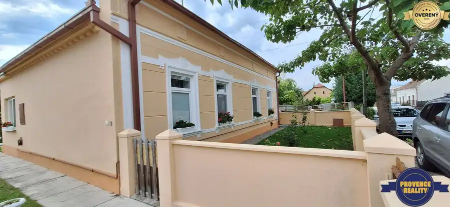
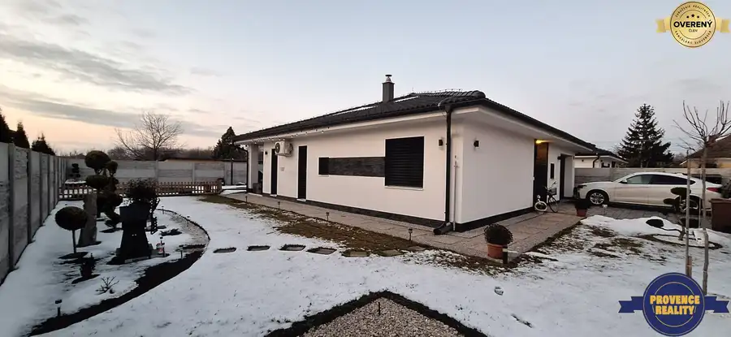
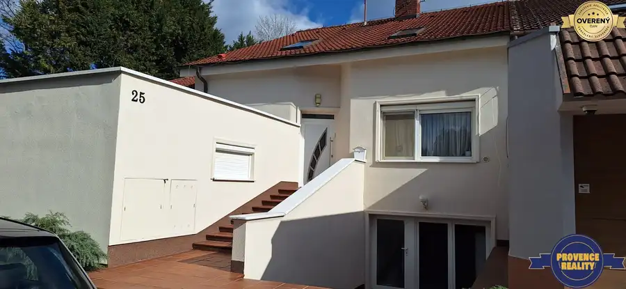

PREDAJ: Rodinný dom s pozemkom 764 m2 - KĽÚČOVEC, okr. DS
Kľúčovec
- Dispozícia5-izbový
- Plocha220 m²
- Poschodie0. z 2
- Stavpo rekonštrukcii
- Vlastníctvoosobné
O nehnuteľnosti
PROVENCE REALITY s.r.o . Vám ponúka na predaj 5 izbový dvojpodlažný rodinný dom v malebnej
obci KĽÚČOVEC, okr. Dunajská Streda. Rodinný dom sa rozprestiera na pozemku o rozlohe 764 m2.
Rodinný dom je postavený z tehál a v roku 2002 prešiel rekonštrukciou.
Dispozičné riešenie domu je nasledovné:
SUTERÉN: - pivnica, kotolňa, garáž pre 2 autá, skladové priestory
1.NP. - chodba, priestranná obývačka - denná časť, kuchyňa s jedálenským kútom, špajza,
kúpeľňa so sprchovým kútom, zvlášť toaleta
2. NP. - chodba, 4 nepriechodné izby, kúpeľňa s rohovou vaňou, zvlášť toaleta, terasa
VLASTNOSTI NEHNUTEĽNOTI:
- okná: plastové s vnútornými žalúziami
- podlahy: plávajúce parkety v izbách, inde keramická dlažba
- interiérové dvere: drevené
- vchodové dvere: plastové
- kúrenie: vlastný plynový kotol, kotol na tuhé palivo
- ohrev vody: bojlerom
- optický internet
- všetky IS zavedené: plyn, obecný vodovod, elektrina 220/ 400 V, žumpa,
- na pozemku: vlastná studňa
- pozemok je oplotený, nachádzajú sa tam aj hospodárske budovy
Parkovanie je možné priamo pred domom, alebo vo dvore.
Majitelia majú v užívaní aj ďalší pozemok oproti rodinnému domu s parkovou úpravou,
ktorý siaha až k miestnemu kanálu.
Tiež sa tu nachádza aj súkromný rybník s možnosťou užívania.
Rodinný dom sa nachádza v malebnej prírode blízkosti rybníka /jazera/ a kanálu, obklopený
lužnými lesmi, krásnou prírodou, vhodný na pokojný život....
Vhodný je aj ako dvojgeneračný dom, pre viacčlennú rodinu.
Obec Kľúčovec sa nachádza len na 11 km od termálnych kúpeľov vo Veľkom Mederi,
na 30 km od okresného mesta Dunajská Streda a cca 20 km od mesta Györ /HU/.
Je tu možnosť turistiky, cykloturistiky, rybolovu, vodných športov, člnkovania, atď.
Ak Vás ponuka zaujala, neváhajte ma kontaktovať !
Vaša maklérka: Zsuzsanna Mészáros,
TEL. kontakt:
V cene nehnuteľnosti je zahrnutý kompletný právny servis vrátane autorizácie zmlúv a poplatkov
spojených s prevodom vlastníckych práv na katastri.
ŽIADNE ĎALŠIE POPLATKY !
------------------------------------------------------------------------------------------------------------------------------------
Text a fotografie sú autorským dielom a majetkom realitnej kancelárie PROVENCE REALITY s.r.o
Parametre
| Rozloha pozemku | 764 m² |
|---|---|
| Zastavaná plocha | 500 m² |
| Úžitková plocha | 220 m² |
| Poschodie | prízemie |
| Počet poschodí | 2 |
| Počet izieb | 5 |
| Vlastníctvo | osobné |
| Stav | po rekonštrukcii |
| Odvoz odpadu | áno |
| Voda | studňa a vodovod |
| El. napätie | 230/400V |
| Plyn | áno |
| Kanalizácia | žumpa |
| Internet | optika |
| Kúpeľňa | vaňa a sprchovací kút |
| Vykurovanie | vlastné - plyn |
| Balkón | áno |
| Terasa | áno |
| Pivnica | áno |
| Garáž | áno - 2 autá |
| Parkovanie | vlastné vyhradené |
| Inžinierske siete | áno |
| Postavené z | tehla |
| Zariadenie | zariadený |
| Zateplený objekt | nie |
| Strecha | po rekonštrukcii |
| Krb | áno |
| Energetický certifikát | nie |
| Predzáhradka | áno |
| Bezbariérový prístup | nie |
| Okná | plastové |
| Terén | rovina |
| Prístupová cesta | asfaltová cesta |
| Dátum zverejnenia | 20. 3. 2026 |
Kde to je
Mohlo by Vás zaujímať

Rodinné domy10 165 000 €PREDAJ: Rodinný dom s pozemkom 2 317 m2 - Brestovec, okr. KN Brestovec 4-izbový210 m² PROVENCE REALITY s.r.o. - z poverenia majiteľa Vám ponúka na predaj rodinný dom v obci Brestovec, okr. Komárno. Rodinný dom bol postavený z pálených…
Rodinné domy10 285 000 €PREDAJ: Rodinný dom - NOVOSTAVBA v meste - KOLÁROVO, okr. KN Kolárovo 4-izbový167 m² PROVENCE REALITY s.r.o. - Vám ponúka na predaj luxusný rodinný dom typu bungalov v tichej lokalite mesta KOLÁROVO, okr. Komárno. 4 ročná novostavba,…
Rodinné domy10 298 000 €PREDAJ: Luxusný rodinný dom s bazénom a dvojgarážou v Komárne Komárno 5-izbový316 m² PROVENCE REALITY s.r.o. vám ponúka jedinečnú príležitosť na kúpu luxusného rodinného domu v malebnom meste Komárno. Tento nádherný dom, postavený v…